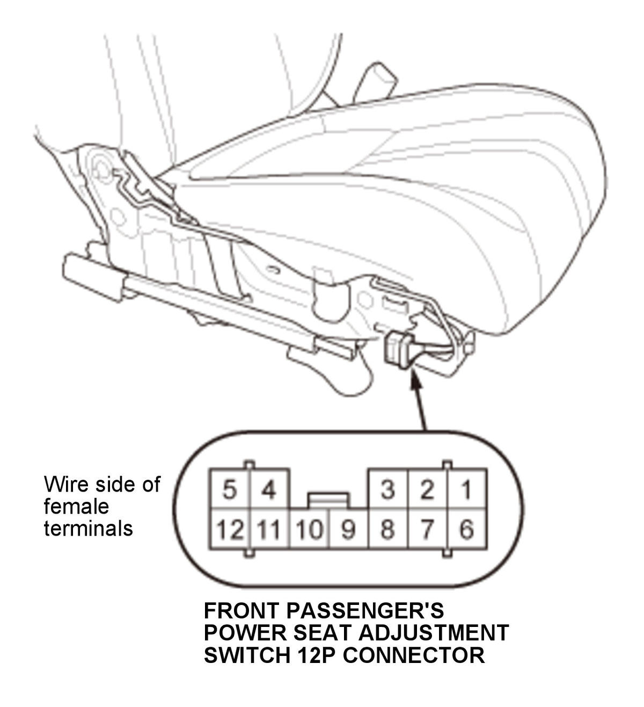
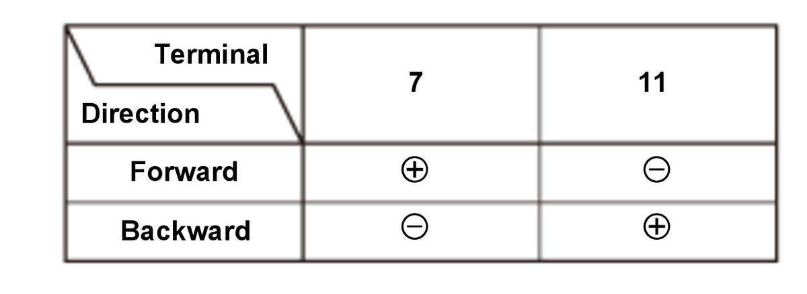
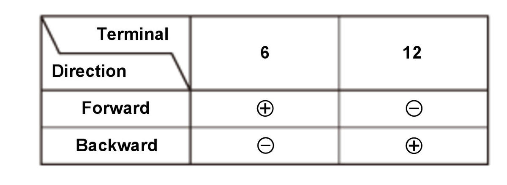

Front Passenger's Power Seat Motor Test: Test
SRS components are located in this area. Review the SRS component locations and the precautions and procedures before doing repairs or service.
- Front Passenger's Seat Recline Cover - Remove
NOTE: If removing the front passenger's seat recline cover, you do not need to remove the front passenger's seat.
- Power Seat Motor - Test



Courtesy of HONDA, U.S.A., INC.HONDA, U.S.A., INC.HONDA, U.S.A., INC.
Slide motorRecline motor
1. Test the motor by applying power and ground at the front passenger's power seat adjustment switch connector on the seat harness side according to the table. When the motor stops running, disconnect 12 volt battery power immediately. 2. If the motor does not run or fails to run smoothly, remove the front passenger's seat
, go to step 3.
3. Remove the seat-back cover/pad as needed .
4. Disconnect the connector(s) (A).Slide motor Recline motor
5. Test each motor by connecting power and ground according to the table. When the motor stops running, disconnect 12 volt battery power immediately. 6. If the motor does not run or fails to run smoothly, replace:
NOTE: All motors are part of the seat frame.
If the motor runs smoothly, replace the front passenger's seat wire harness.
- All Removed Parts - Install
1. Install the parts in the reverse order of removal.